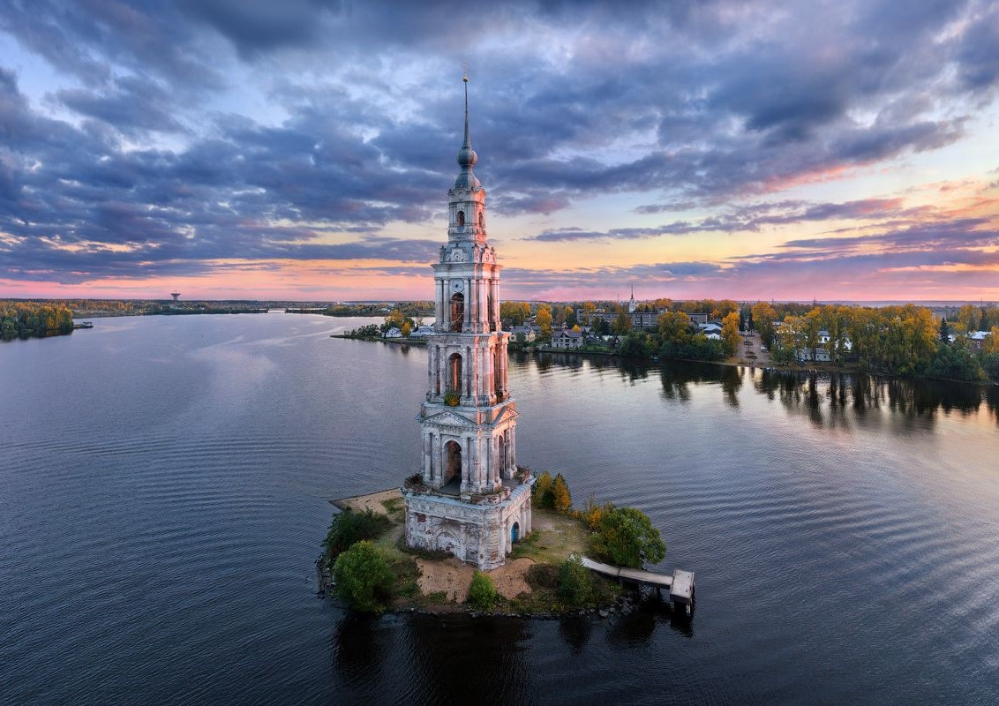

Калязин
Калязин — старинный русский город в Тверской области, расположен на месте впадения реки Жабня в Волгу. О первых поселениях в этих местах известно с исторических летописей, сохранившихся до нынешних времён. Село Никола, основанное на месте современного города, начало своё обустройство в 12 столетии. Его стремительный рост начался с возведением на противоположном берегу Волги Калязинско-Троицкого монастыря в 15 веке.

Основная достопримечательность города — затопленная колокольня, одиноко стоящая посреди реки. В свое время, из-за построенной здесь ГЭС, весь старый город Калязина затопили (2/3 от общей площади). Сейчас на его месте — широкая полноводная заводь, разделяющая современный Калязин на две части — восточную и западную. Пересечь гавань можно лишь по единственному мосту, расположенному чуть выше города. В декабре 2021 года была проведена полная реставрация. Постройку побелили, укрепили берег и добавили ночную подсветку. После реставрации колокольня стала напоминать маяк посреди полноводной Волги. Фото справа сделано в феврале 2022 года.
Церковь Вознесения Господня, возведённая в 1783 году первоначально имела один престол, затем по истечению времени к зданию были пристроены Тихвинский и Макария Калязинского приделы. Возвышавшаяся трёхъярусная колокольня с парными колонами была украшена высоким шпилем. Колокольня изящной и прекрасной архитектуры со временем также была воздвигнута рядом с церковью.
Здание церкви Богоявления было построено в 1781 году за рекой Жабней и представляло собой пятиглавый храм с престолом Богоявления и с одним пределом Святого Илии. В последствии был пристроен ещё один придел Иоанна Предтечи. С 1937 года в здании церкви расположился краеведческий музей, что спасло церковь от разорения и разрушения. Церковь возведена в 1528—1532 годах предположительно итальянским архитектором Петром Францизском Анибале (по русским летописям — Пётр Фрязин или Петрок Малой) на правом берегу Москвы-реки. Ктитор храма — великий князь Московский Василий III.